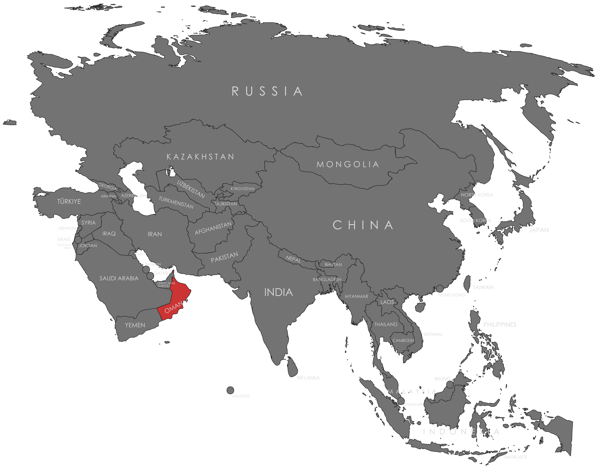

Specifications
- Local Name: عمان (ʿUmān)
- Proportion: 1:2
- Name of the Flag: علم سلطنة عمان (ʿAlam Saltanat ʿUmān – National Flag of Oman)
- Adopted: April 25, 1995
Symbolism
- White: Peace and prosperity
- Red: Struggle for independence and the sacrifices of the past
- Green: Fertility, agriculture, and the Jebel Akhdar region
- National emblem (crossed swords, khanjar dagger, and belt) in the upper hoist corner: Authority and heritage
Colors:
Shapes / Symbols:
Meaning / Special Display
- The flag is raised on national holidays, official ceremonies, and royal events, symbolizing Oman’s unity, heritage, and sovereignty.
- Red vertical stripe near the hoist honors historical struggles against foreign invaders.
Description
- The flag represents Oman’s rich history, national pride, and commitment to peace and progress.
- For citizens, it reflects loyalty, heritage, and the importance of national unity.

Return to Gallery